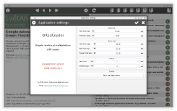

Android application package file (APK)
qrssreader-alpha-v0.1.1.apk
About QRssReader
QRssReader is nice and simple RSS reader for Linux, Windows and Android based on Qt5 framework. Layout of its main screen consist of top toolbar, news view on the left side and news list on the right side. Top toolbar contains tabs to switch between news lists and buttons to control application and show settings and help dialogs. You can have up to seven tabs each one with its own list of news sources. You can modify sources of news or load them from predefined lists. Further you can set number of tabs and font sizes in list of news and news view. Downloaded RSS data are stored locally so you can browse them offline.
Download
You can download QRssReader for your platform here. Please note that current Android version is experimental and tested only at one tablet (Asus K00F) with screen resolution 1280x800 and Android version 4.2.2. Exe installer for Windows and packages for selected Linux distributions might come later.
Zip archive
qrssreader-alpha-v0.1.1-x86.zip
qrssreader-alpha-v0.1.1-x86.zip
Source codes
https://github.com/kacerpetr/QRssReader
https://github.com/kacerpetr/QRssReader
Screenshots
Below you can see some screenshots of QRssReader taken in Android and Linux. Images show application main screen, editor of news sources, application settings and application help.
{kind=link}
{kind=link}
{kind=link}
{kind=link}
{kind=link}
{kind=link}
{kind=link}
{kind=link}